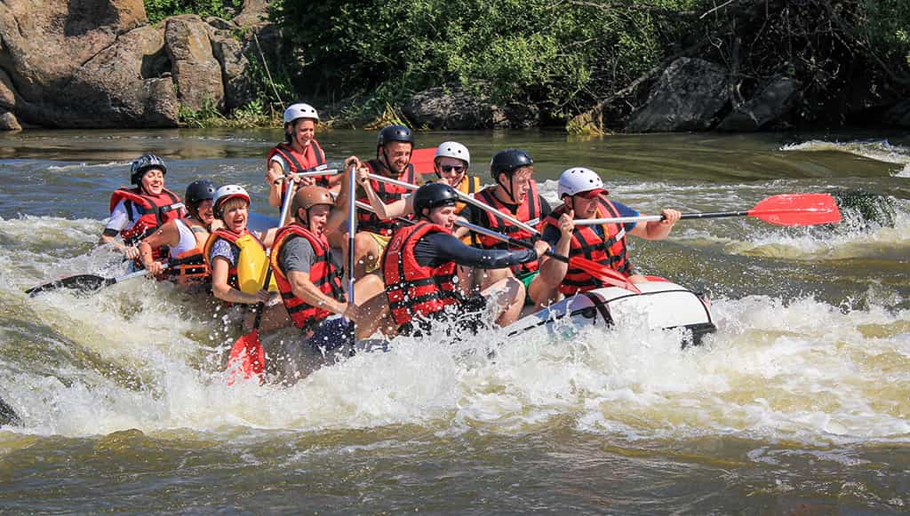

Big Mallard
Difficulty: Intermediate
Duration: Full Day (8 hours)
Distance: 12 miles
Experience the rush of Big Mallard, one of our most popular trips! This full-day adventure takes you through some of the most exciting rapids in the region. Perfect for those looking for a genuine thrill while still enjoying scenic views. Our expert guides will coach you through each rapid, making it an unforgettable experience.